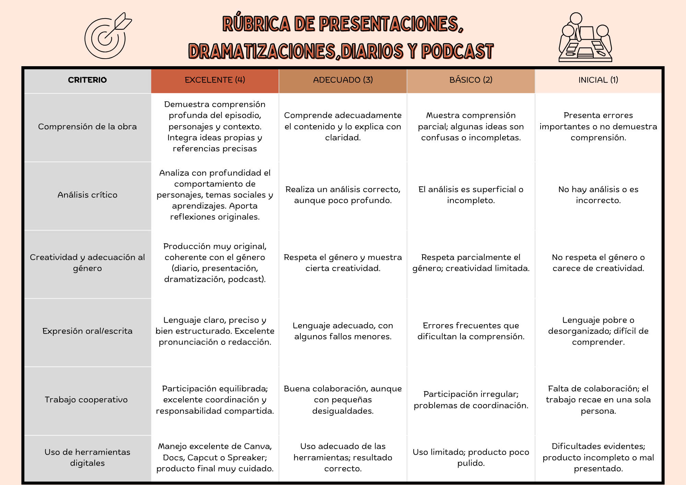

Rúbrica
Uno de los instrumentos de evaluación empleados va a ser la rúbrica, la cual os la adjunto a continuación. Con dicha rúbrica se van a evaluar las tareas 2, 4, 5, 6, 7 y el reto final.

Cuestionario
El otro instrumento de evaluación empleado es el cuestionario, que emplearemos tras la tarea 1 y tras la tarea 3. Se trata de una serie de preguntas, tanto cerradas, para evaluar la comprensión del contenido, como abiertas, de reflexión personal y sobre el propio proceso de aprendizaje.
1. Comprensión del contenido (preguntas cerradas)
Marca la opción que mejor refleje tu opinión.
1.1. El maltrato que sufre Lázaro por parte del ciego es…
☐ Físico
☐ Psicológico
☐ Económico
☐ Una combinación de varios tipos
1.2. Considero que Lázaro entiende el maltrato como algo normal porque…
☐ Es la única forma de vida que conoce
☐ No tiene alternativas para sobrevivir
☐ Depende totalmente de sus amos
☐ No lo entiende como normal
1.3. El episodio del jarrazo (golpe de la jarra) me ha parecido…
☐ Muy violento
☐ Violento pero comprensible en el contexto
☐ Poco relevante
☐ No lo he entendido bien
2. Reflexión personal (preguntas abiertas)
2.1. ¿Qué sentimientos te ha generado la lectura de los episodios de maltrato hacia Lázaro? (Respuesta abierta)
2.2. ¿Qué diferencias encuentras entre el maltrato infantil en la obra y el maltrato infantil en la actualidad? (Respuesta abierta)
2.3. ¿Crees que Lázaro tenía alguna alternativa para escapar de esa situación? Explica tu respuesta. (Respuesta abierta)
3. Reflexión sobre el propio aprendizaje
3.1. ¿Qué parte de esta tarea te ha resultado más difícil y por qué? (Respuesta abierta)
3.2. ¿Qué estrategias has utilizado para comprender mejor el texto?
☐ Releer fragmentos
☐ Subrayar ideas clave
☐ Consultar con compañeros
☐ Buscar información adicional
☐ Otra (especifica): ___________
3.3. Después de esta actividad, siento que…
☐ Comprendo mejor la situación de Lázaro
☐ Me cuesta entender el contexto histórico
☐ He aprendido a identificar tipos de maltrato
☐ Necesito más apoyo para analizar textos literarios
4. Valoración de la actividad
4.1. La actividad me ha ayudado a reflexionar sobre el maltrato infantil.
☐ Mucho
☐ Bastante
☐ Poco
☐ Nada
4.2. ¿Qué mejorarías de esta tarea para que te ayudara más a aprender? (Respuesta abierta)